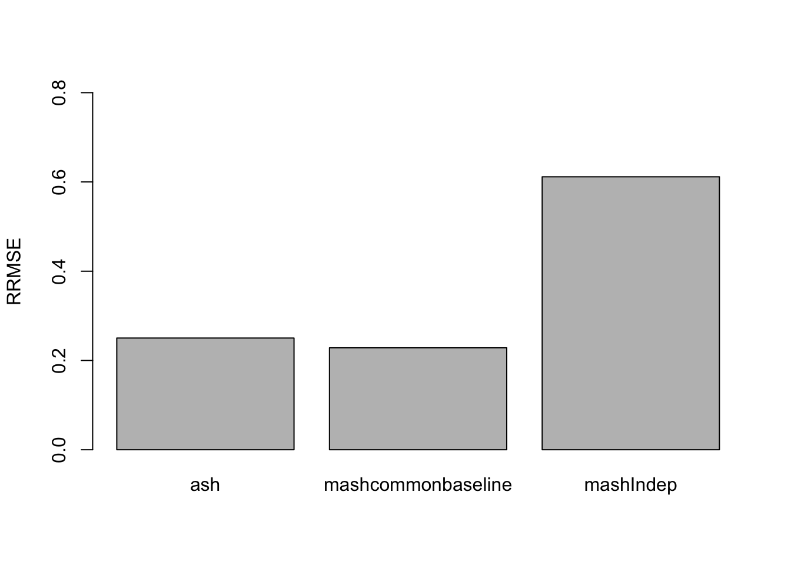

Last updated: 2018-05-17
Code version: 84145da
library(mashr)Loading required package: ashrIn the simulation, \[c_{j2...R} = c_{j1}1 + \delta_{j}\] \[\hat{c}_{j}|c_{j} \sim N_{R}(c_{j}, \frac{1}{2}I)\] Let L be the contrast matrix. Therefore, \[\hat{\delta}_{j}|\delta_{j} = L\hat{c}_{j}|c_{j} \sim N_{R-1}(\delta_{j}, \frac{1}{2}LL')\]
We first generate the data:
set.seed(2018)
data = sim_contrast2(nsamp = 12000, ncond = 8)This simulation routine creates a dataset with 8 conditions, and four different types of deviations \(\delta_{j}\): null, independent among conditions, condition-specific in condition 2, and shared (equal effects in all conditions). The data contains 10% non-null effects \[\delta_{j} \sim \frac{9}{10}N(0,0)+\frac{1}{30}N(0,I)+\frac{1}{30}N(0,11^{T})+\frac{1}{30}N(0,e_{1}e_{1}^{T})\]
Set up the contrast matrix and the mash contrast data object
R = 8
L = diag(R-1)
L = cbind(rep(-1, R-1), L)
row.names(L) = c('2-1','3-1','4-1','5-1','6-1','7-1','8-1')
mash_data = mash_set_data(Bhat=data$Chat, Shat=data$Shat)
mash_data_L = mash_set_data_contrast(mash_data, L)Set up the covariance matrices:
# canonical
U.c = cov_canonical(mash_data_L)
# data driven
m.1by1 = mash_1by1(mash_data_L, alpha=0)
strong = get_significant_results(m.1by1,0.05)
# only 1 strong samplesFit mashcontrast model
mashcontrast.model = mash(mash_data_L, U.c, algorithm.version = 'R') - Computing 12000 x 181 likelihood matrix.
- Likelihood calculations took 1.01 seconds.
- Fitting model with 181 mixture components.
- Model fitting took 2.22 seconds.
- Computing posterior matrices.
- Computation allocated took 0.59 seconds.print(get_loglik(mashcontrast.model),digits = 10)[1] -105519.4856Use get_significant_results to find the indices of effects that are “significant”:
length(get_significant_results(mashcontrast.model))[1] 68The number of false positive is 1.
barplot(get_estimated_pi(mashcontrast.model),las = 2,cex.names = 0.7)Indep.data = mash_set_data(Bhat = mash_data_L$Bhat)
Indep.model = mash(Indep.data, U.c) - Computing 12000 x 181 likelihood matrix.
- Likelihood calculations took 0.24 seconds.
- Fitting model with 181 mixture components.
- Model fitting took 2.42 seconds.
- Computing posterior matrices.
- Computation allocated took 0.07 seconds.print(get_loglik(Indep.model),digits = 10)[1] -111502.5605length(get_significant_results(Indep.model))[1] 3765There are more discoveries here, but lots of them are false discoveries. The number of false positive is 3295.
barplot(get_estimated_pi(Indep.model),las = 2, cex.names = 0.7)The RRMSE plot:
delta = data$C %*% t(L)
barplot(c(sqrt(mean((delta - m.1by1$result$PosteriorMean)^2)/mean((delta - data$Chat%*%t(L))^2)), sqrt(mean((delta - mashcontrast.model$result$PosteriorMean)^2)/mean((delta - data$Chat%*%t(L))^2)), sqrt(mean((delta - Indep.model$result$PosteriorMean)^2)/mean((delta - data$Chat%*%t(L))^2))), ylim=c(0,0.8), names.arg = c('ash','mashcommonbaseline', 'mashIndep'), ylab='RRMSE')
We check the False Positive Rate and True Positive Rate. \[FPR = \frac{|N\cap S|}{|N|} \quad TPR = \frac{|CS\cap S|}{|T|} \]
Each effect is treated as a separate discovery in each condition
delta = data$C %*% t(L)
sign.test.mash = as.matrix(delta)*mashcontrast.model$result$PosteriorMean
sign.test.Indep = as.matrix(delta)*Indep.model$result$PosteriorMean
sign.test.ash = as.matrix(delta)*m.1by1$result$PosteriorMean
thresh.seq = seq(0, 1, by=0.00005)[-1]
mashcontrast = matrix(0,length(thresh.seq), 2)
Indep = matrix(0,length(thresh.seq), 2)
Ash = matrix(0,length(thresh.seq), 2)
colnames(mashcontrast) = colnames(Indep) = colnames(Ash) = c('TPR', 'FPR')
for(t in 1:length(thresh.seq)){
mashcontrast[t,] = c( sum(sign.test.mash>0 & mashcontrast.model$result$lfsr <= thresh.seq[t])/sum(delta!=0), sum(delta==0 & mashcontrast.model$result$lfsr <=thresh.seq[t])/sum(delta==0))
Indep[t,] = c(sum(sign.test.Indep>0& Indep.model$result$lfsr <=thresh.seq[t])/sum(delta!=0), sum(delta==0& Indep.model$result$lfsr <=thresh.seq[t])/sum(delta==0))
Ash[t,] = c(sum(sign.test.ash>0& m.1by1$result$lfsr <=thresh.seq[t])/sum(delta!=0), sum(delta==0& m.1by1$result$lfsr <=thresh.seq[t])/sum(delta==0))
}{plot(mashcontrast[,'FPR'], mashcontrast[,'TPR'], col='red',type='l',ylab="True Positive Rate",xlab="False Positive Rate")
lines(Indep[,'FPR'], Indep[,'TPR'])
lines(Ash[,'FPR'], Ash[,'TPR'], col='green')
legend('bottomright', c('mashcommonbaseline', 'mashIndep', 'ash'),col=c('red','black','green'),lty=c(1,1,1))
}Each effect is treated as a single discovery across all conditions
delta = data$C %*% t(L)
thresh.seq = seq(0, 1, by=0.001)[-1]
mashcontrast = matrix(0,length(thresh.seq), 2)
Indep = matrix(0,length(thresh.seq), 2)
Ash = matrix(0,length(thresh.seq), 2)
colnames(mashcontrast) = colnames(Indep) = colnames(Ash) = c('TPR', 'FPR')
for(t in 1:length(thresh.seq)){
mashcontrast[t,] = c( sum(get_significant_results(mashcontrast.model, thresh.seq[t]) > 10800)/1200, sum(get_significant_results(mashcontrast.model, thresh.seq[t]) <= 10800)/10800)
Indep[t,] = c( sum(get_significant_results(Indep.model, thresh.seq[t]) > 10800)/1200, sum(get_significant_results(Indep.model, thresh.seq[t]) <= 10800)/10800)
Ash[t,] = c( sum(get_significant_results(m.1by1, thresh.seq[t])>10800)/1200, sum(get_significant_results(m.1by1, thresh.seq[t]) <= 10800)/10800)
}{plot(mashcontrast[,'FPR'], mashcontrast[,'TPR'], col='red',type='l',ylab="True Positive Rate",xlab="False Positive Rate")
lines(Indep[,'FPR'], Indep[,'TPR'])
lines(Ash[,'FPR'], Ash[,'TPR'], col='green')
legend('bottomright', c('mashcommonbaseline', 'mashIndep', 'ash'),col=c('red','black','green'),lty=c(1,1,1))
}lfsr:
thresh.seq = seq(0, 0.5, by=0.001)[-1]
mashcontrast = Indep = Ash = numeric(length(thresh.seq))
sign.test.mash = as.matrix(delta)*mashcontrast.model$result$PosteriorMean
sign.test.Indep = as.matrix(delta)*Indep.model$result$PosteriorMean
sign.test.ash = as.matrix(delta)*m.1by1$result$PosteriorMean
for(t in 1:length(thresh.seq)){
sig = mashcontrast.model$result$lfsr <= thresh.seq[t]
mashcontrast[t] = sum(sign.test.mash<=0 & sig)/sum(sig)
sig = Indep.model$result$lfsr <= thresh.seq[t]
Indep[t] = sum(sign.test.Indep<=0 & sig)/sum(sig)
sig = m.1by1$result$lfsr <= thresh.seq[t]
Ash[t] = sum(sign.test.ash<=0 & sig)/sum(sig)
}{plot(thresh.seq, mashcontrast, type='l', col='red', ylab='fsr', ylim=c(0,0.5))
lines(thresh.seq, Indep, col='blue')
lines(thresh.seq, Ash, col='green')
lines(thresh.seq, thresh.seq)
}sessionInfo()R version 3.4.4 (2018-03-15)
Platform: x86_64-apple-darwin15.6.0 (64-bit)
Running under: macOS High Sierra 10.13.4
Matrix products: default
BLAS: /Library/Frameworks/R.framework/Versions/3.4/Resources/lib/libRblas.0.dylib
LAPACK: /Library/Frameworks/R.framework/Versions/3.4/Resources/lib/libRlapack.dylib
locale:
[1] en_US.UTF-8/en_US.UTF-8/en_US.UTF-8/C/en_US.UTF-8/en_US.UTF-8
attached base packages:
[1] stats graphics grDevices utils datasets methods base
other attached packages:
[1] mashr_0.2-8 ashr_2.2-7
loaded via a namespace (and not attached):
[1] Rcpp_0.12.16 knitr_1.20 magrittr_1.5
[4] REBayes_1.3 MASS_7.3-50 doParallel_1.0.11
[7] pscl_1.5.2 SQUAREM_2017.10-1 lattice_0.20-35
[10] foreach_1.4.4 plyr_1.8.4 stringr_1.3.0
[13] tools_3.4.4 parallel_3.4.4 grid_3.4.4
[16] rmeta_3.0 git2r_0.21.0 htmltools_0.3.6
[19] iterators_1.0.9 assertthat_0.2.0 yaml_2.1.19
[22] rprojroot_1.3-2 digest_0.6.15 Matrix_1.2-14
[25] codetools_0.2-15 evaluate_0.10.1 rmarkdown_1.9
[28] stringi_1.2.2 compiler_3.4.4 Rmosek_8.0.69
[31] backports_1.1.2 mvtnorm_1.0-7 truncnorm_1.0-8 This R Markdown site was created with workflowr